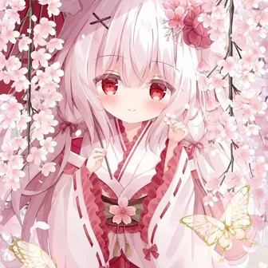

这座小站
保留喜欢的动漫背景与头像，分享社交平台和摄影作品，也放下一些代码与小游戏。没有访问统计，不需要账号。
关于本地偏好
主题、音乐音量、助手开关和最近使用的平台保存在你的浏览器中，不会发送到服务器。清除网站数据即可重置。
来打个招呼 ↗A LITTLE ABOUT ME
喜欢狐狐，欢迎来到这片小天地。

保留喜欢的动漫背景与头像，分享社交平台和摄影作品，也放下一些代码与小游戏。没有访问统计，不需要账号。
主题、音乐音量、助手开关和最近使用的平台保存在你的浏览器中，不会发送到服务器。清除网站数据即可重置。
来打个招呼 ↗